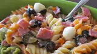

Italian Pasta Salad

Best Pasta Salad Ever
This simple Italian pasta salad comes together quickly
with salami, colorful vegetables, and flavorful salad dressing.
Ingredients
1 (12 ounce) package tri-color rotini pasta
3/4 pound Italian salami, finely diced
1/2 green bell pepper, sliced
1/2 red bell pepper, sliced
1 (6ounce) can sliced black olives
8 ounces small fresh mozzarella balls (ciliegine)
1 cup Italian-style salad dressing
3 (.7 ounce) packages dry Italian-style salad dressing mix, or to taste
1/2 cup shredded Parmesan cheese
Steps
Bring a large pot of lightly salted water to a boil. Cook rotini
pasta at a boil until tender yet firm to the bite, about 8 minutes.
Drain and rinse with cold water until cool.
Combine pasta, salami, bell peppers, onion. mozzarella balls, and
olives in a large bowl. Add salad dressing and toss to coat.
Season pasta salad with dry salad dressing mix and stir to combine.
Sprinkle with Parmesan cheese before serving.